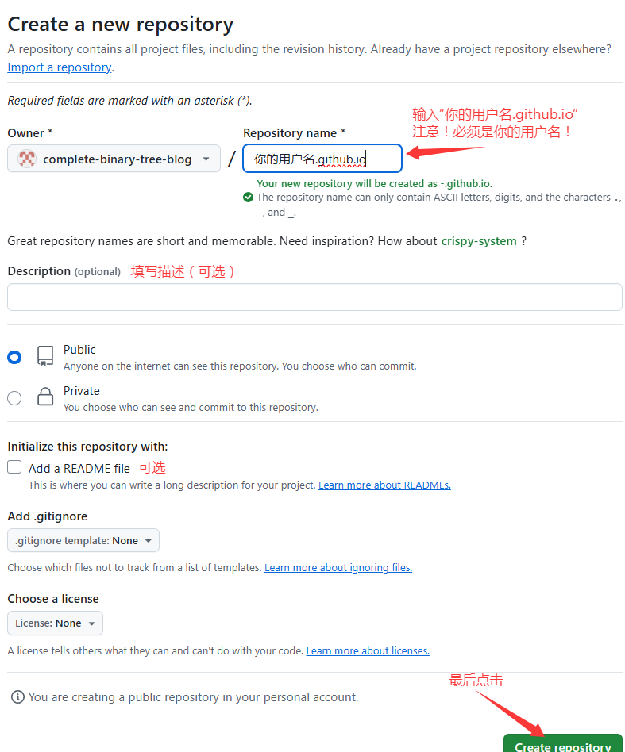
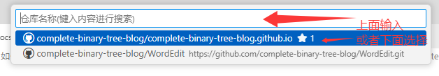
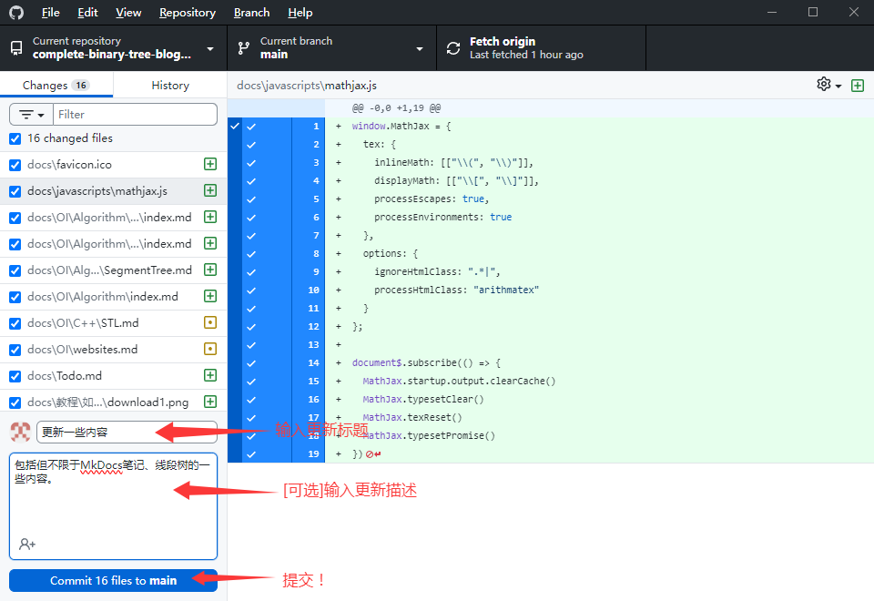
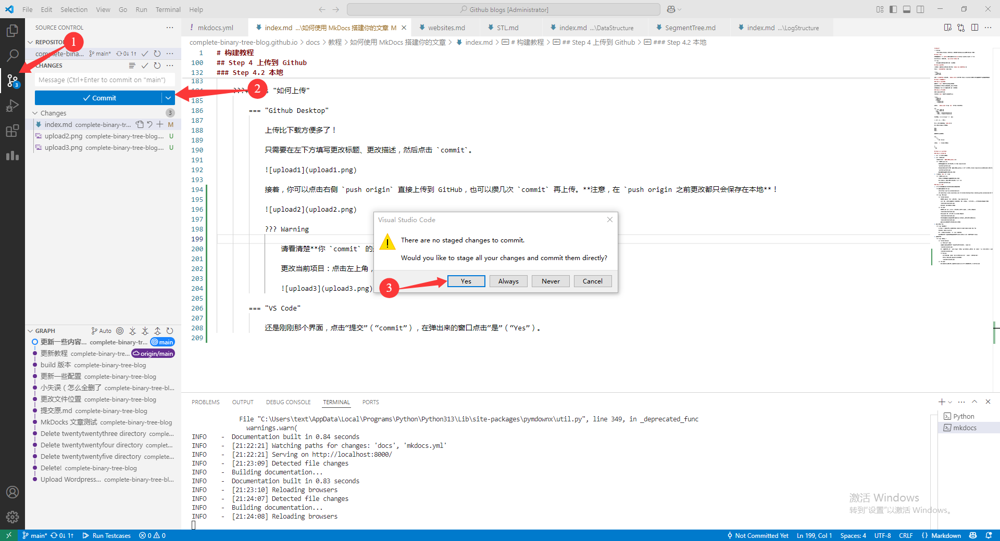
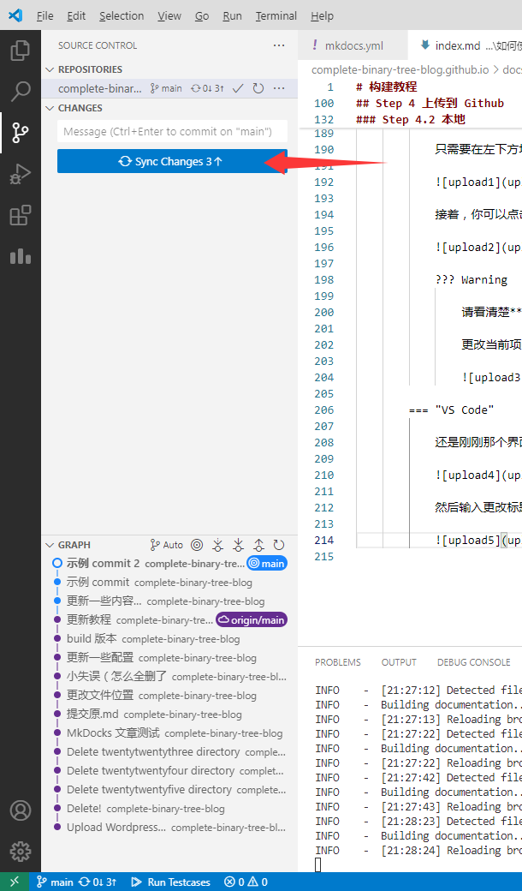
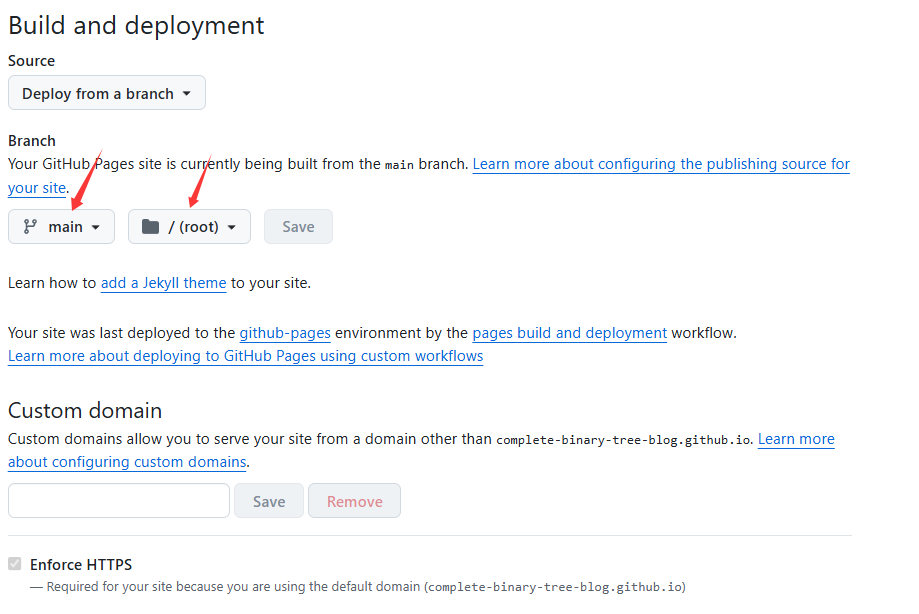

构建教程
Warning
本文主要针对 Windows 用户，Unix 用户（如 MacOS、Linux）的操作可能不一样。
Step 1 下载
首先你需要有一个 python。如果你没有，去官网下一个吧。
下载以后，打开终端，运行 pip install mkdocs。
Tips
如果你下载失败了，可以尝试开个梯子。
Step 2 新建项目
用终端打开你想要创建项目的路径，然后 mkdocs new (文件夹名)。
然后在 路径/文件夹名 下会出现：
1 2 3 | |
此时 cd 文件夹名，然后运行 mkdocs serve，并访问 https://localhost:8000，然后你就可以看到文章页面了。
Step 3 完善你的博客
Step 3.1 新建文件
你可以在 docs 文件夹目录下新建文件。
新建文件会自动识别，保存的文件也会自动识别。
此时你刷新一下浏览器，你会发现多了一个文件。
Step 3.2 分类文件
文件多了肯定要分类。
以下以此 docs 文件夹举例文件分类：
1 2 3 4 5 6 | |
此时打开 mkdocs.ymal，找到 nav: 并替换为以下内容：
1 2 3 4 5 6 | |
然后重新加载浏览器，上方标签增加了：
1 | |
点击“主页”，就会来到 index.md。
点击“项目”，左边栏长这样：
1 2 3 | |
你还可以嵌套。如：
1 2 3 4 | |
那么打开 1 以后会是这样：
1 2 3 | |
Step 4 上传到 Github
Step 4.1 Github 端
-
创建一个 GitHub 账号。
-
创建一个存储库。
把存储库命名为
你的用户名.gihub.io。图片操作示例
首先来到你的个人主页，然后点击“+”-“New repository”。
然后将存储库名字改成
你的用户名.github.io的形式，并点击“Create repository”创建存储库。注意，必须是你的用户名。
最后你就会到你这个存储库的主页。
Warning
如果不把你的存储库命名为
你的用户名.gihub.io，将无法使用 GitHub Page。如果命名错了可以到 settings 改名。 -
复制存储库
URL以备复制。图片操作示例
书接上回，首先你要找到你的存储库的主页。
点击“Code”按钮的下拉箭头，然后点击复制图标。
Step 4.2 本地
-
随便找个有克隆功能的软件把这个存储库克隆下来。
操作步骤
首先点击左上角
File选项，点击Copy repository。选择
URL选项，把你刚刚复制的储存库URL粘贴到第一个框，并在第二个框输入要保存到的位置。然后等待一会，即可下载完成。
首先点击左侧边栏第三个按钮，然后点击“更改”旁边的“...”，点击“克隆”。
然后上方会出现一个框，点击“从 GitHub 克隆”。
然后输入你的仓库名称。（如果你有登录 GitHub，也可以只写在下面选择）

最后选择保存文件夹，并等待它下载完成。
-
在本地进行复制。
如何操作
把 Step 2 中的控制台停掉。可以输入 Ctrl+C 来停止。
然后输入
mkdocs build。待执行完成后，目录下会多一个
site文件夹。将里面的内容复制到刚刚克隆到的文件夹里。
注意
site文件夹不要复制！只复制里面的文件！ -
提交更改。
如何上传
上传比下载方便多了！
只需要在左下方填写更改标题、更改描述，然后点击
commit。
接着，你可以点击右侧
push origin直接上传到 GitHub，也可以攒几次commit再上传。注意，在 `push origin 之前更改都只会保存在本地！Warning
请看清楚你
commit的是哪个项目！不过commit是可以撤回的更改当前项目：点击左上角，选择即可。
还是刚刚那个界面，点击“提交”（“commit”），在弹出来的窗口点击“是”（“Yes”）。

然后输入更改标题，并点击右上角的勾。
最后点击“同步更新”（“Sync Changes”）按钮上传。

大功告成！
Step 5 设置你的 GitHub Page
回到你的 GitHub 存储库主页。
此时你会发现你的存储库多了一些内容。
此时点击 Settings，点击左侧的 Page，并在右侧的 Build and deployment/Source 的下拉箭头中选中 Deploy from a branch 按钮。
此时浏览器会刷新。然后在它下面的 Branch 选中 main/(root)。

然后点击旁边的 Save（如果它没被禁用）。大功告成！
此时你需要等一会（最多 \(10\) 分钟）。当你看到 Your site is live at https://你的用户名.github.io 的时候，点击那个链接。
如果出现了你在本地运行 mkdocs serve 一样的页面，恭喜你，成功了！